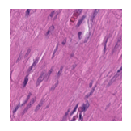
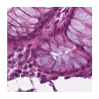
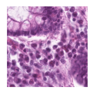
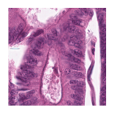

Loki Annotate - Marker Genes
This notebook demonstrates how to run Loki Annotate on the demo mark genes validation dataset. It takes about 10 seconds to run this notebook on MacBook Pro.
[1]:
import pandas as pd
import os
import torch
from PIL import Image
import matplotlib.pyplot as plt
import loki.annotate
import loki.preprocess
import loki.utils
import loki.plot
%matplotlib inline
/opt/anaconda3/envs/loki/lib/python3.9/site-packages/timm/models/layers/__init__.py:48: FutureWarning: Importing from timm.models.layers is deprecated, please import via timm.layers
warnings.warn(f"Importing from {__name__} is deprecated, please import via timm.layers", FutureWarning)
We provide the embeddings generated from the OmiCLIP model. The sample data and embeddings are stored in the directory data/loki_annotate/marker_gene_data, which can be donwloaded from Google Drive link.
Here is a list of the files that are needed to run the tissue annotation on the demo validation dataset:
.
├── checkpoint_val
│ ├── val_image_embeddings.pt
│ └── val_text_embeddings.pt
└── demo_validation_data
├── ADI-TCGA-AAWDNKDK.tif
├── ADI-TCGA-CHWDWGEK.tif
├── ADI-TCGA-RGCKQTPN.tif
├── ADI-TCGA-RRHWRPTE.tif
├── ADI-TCGA-YDAHSPAR.tif
├── LYM-TCGA-AKGHMWKD.tif
├── LYM-TCGA-AMVASFYP.tif
├── LYM-TCGA-AYMAHWFQ.tif
├── LYM-TCGA-VWAYKKDM.tif
├── LYM-TCGA-WSHPCMIR.tif
├── MUS-TCGA-AASRLCCT.tif
├── MUS-TCGA-CDFYVLPN.tif
├── MUS-TCGA-CIFAPIID.tif
├── MUS-TCGA-ELFVYKYW.tif
├── MUS-TCGA-QSQCNCSP.tif
├── NORM-TCGA-ACCEDPAW.tif
├── NORM-TCGA-AFFFQQST.tif
├── NORM-TCGA-APSNTVTS.tif
├── NORM-TCGA-EPIQVVLF.tif
├── NORM-TCGA-FTGGIFEL.tif
├── TUM-TCGA-CVGTRDRC.tif
├── TUM-TCGA-DPRWETWM.tif
├── TUM-TCGA-TKLWWMII.tif
├── TUM-TCGA-TLSHWGSQ.tif
├── TUM-TCGA-YTPCKKYY.tif
└── image_names.txt
[2]:
data_path = './data/loki_annotate/marker_gene_data/'
[3]:
filenames = pd.read_csv(os.path.join(data_path, 'demo_validation_data', 'image_names.txt'), header=None)[0].tolist()
[4]:
classes = ['Tumor',
'Adipose',
'Muscle',
'Lymphocytes',
'Normal colon mucosa',]
Loki Annote with marker genes
Use Loki Annotate to annotate tumor, adipose, muscle, lymphocytes, and normal colon mucosa tissue patch images using corresponding marker genes.
[5]:
# text = ['TP53 EPCAM KRAS EGFR DEFA5 DEFA6 CEACAM5 CEA KRT18 KRT8 KRT19 CDH17 CK20 MYO6 TP53BP2 PLA2G2A CLDN7 TJP1 PKP3 DSP',
# 'FABP4 ADIPOQ LEP ACSL1 APOE GPAM FABP1 CEBPA LIPE ADIPOR1 ADIPOR2',
# 'MYL6 MYL9 TPM2 TPM1 DES MYH11 COL3A1 CALD1 MYLK SMTN NPPA TNNT2 LMOD1 ACTA2 CNN1 MYOCD ACTA1 MYLK2',
# 'TRBC2 IL2 IL2RA IL2RB IL4 TNF LAPTM5 TERF2IP ATF6 CD79A CD3D CD24 CD3E CD4 CD8A CD25 CD34 CD45 CD56 CD69',
# 'CDX2 SI LCT VIL1 FABP2 KRT20 SLC5A1 SLC26A3 SLC9A3 GSTA1 TFF3 CDH17 GUCY2C GUCA2A GUCA2B AQP8 GCG']
all_text_embeddings = torch.load(os.path.join(data_path, 'checkpoint_val', 'val_text_embeddings.pt'))
all_image_embeddings = torch.load(os.path.join(data_path, 'checkpoint_val', 'val_image_embeddings.pt'))
[6]:
i=0
for image_name in filenames:
image_path =os.path.join(data_path, 'demo_validation_data', image_name)
image = Image.open(image_path)
image_embeddings = all_image_embeddings[i]
dot_similarity, pred_class = loki.annotate.annotate_with_marker_genes(classes, image_embeddings, all_text_embeddings)
plt.figure(figsize=(1.5,1.5), dpi=120)
plt.imshow(image)
plt.axis("off")
plt.title(print("Predicted class:", pred_class))
plt.title(print("Similarity scores:", [f"{cls}: {score:.3f}" for cls, score in zip(classes, dot_similarity)]))
plt.show()
i=i+1
Predicted class: Adipose
Similarity scores: ['Tumor: 0.341', 'Adipose: 0.391', 'Muscle: 0.328', 'Lymphocytes: 0.303', 'Normal colon mucosa: 0.349']
Predicted class: Adipose
Similarity scores: ['Tumor: 0.315', 'Adipose: 0.390', 'Muscle: 0.358', 'Lymphocytes: 0.309', 'Normal colon mucosa: 0.342']
Predicted class: Adipose
Similarity scores: ['Tumor: 0.341', 'Adipose: 0.372', 'Muscle: 0.336', 'Lymphocytes: 0.313', 'Normal colon mucosa: 0.321']
Predicted class: Adipose
Similarity scores: ['Tumor: 0.326', 'Adipose: 0.393', 'Muscle: 0.352', 'Lymphocytes: 0.310', 'Normal colon mucosa: 0.355']
Predicted class: Adipose
Similarity scores: ['Tumor: 0.319', 'Adipose: 0.420', 'Muscle: 0.327', 'Lymphocytes: 0.322', 'Normal colon mucosa: 0.319']
Predicted class: Muscle
Similarity scores: ['Tumor: 0.342', 'Adipose: 0.320', 'Muscle: 0.365', 'Lymphocytes: 0.319', 'Normal colon mucosa: 0.312']

Predicted class: Muscle
Similarity scores: ['Tumor: 0.356', 'Adipose: 0.322', 'Muscle: 0.363', 'Lymphocytes: 0.316', 'Normal colon mucosa: 0.320']

Predicted class: Muscle
Similarity scores: ['Tumor: 0.352', 'Adipose: 0.323', 'Muscle: 0.361', 'Lymphocytes: 0.314', 'Normal colon mucosa: 0.308']

Predicted class: Muscle
Similarity scores: ['Tumor: 0.353', 'Adipose: 0.333', 'Muscle: 0.368', 'Lymphocytes: 0.332', 'Normal colon mucosa: 0.291']
Predicted class: Muscle
Similarity scores: ['Tumor: 0.353', 'Adipose: 0.334', 'Muscle: 0.371', 'Lymphocytes: 0.302', 'Normal colon mucosa: 0.338']
Predicted class: Normal colon mucosa
Similarity scores: ['Tumor: 0.378', 'Adipose: 0.372', 'Muscle: 0.351', 'Lymphocytes: 0.314', 'Normal colon mucosa: 0.386']

Predicted class: Normal colon mucosa
Similarity scores: ['Tumor: 0.346', 'Adipose: 0.354', 'Muscle: 0.336', 'Lymphocytes: 0.333', 'Normal colon mucosa: 0.360']
Predicted class: Normal colon mucosa
Similarity scores: ['Tumor: 0.351', 'Adipose: 0.333', 'Muscle: 0.297', 'Lymphocytes: 0.323', 'Normal colon mucosa: 0.355']
Predicted class: Normal colon mucosa
Similarity scores: ['Tumor: 0.343', 'Adipose: 0.339', 'Muscle: 0.320', 'Lymphocytes: 0.328', 'Normal colon mucosa: 0.360']
Predicted class: Normal colon mucosa
Similarity scores: ['Tumor: 0.350', 'Adipose: 0.329', 'Muscle: 0.301', 'Lymphocytes: 0.340', 'Normal colon mucosa: 0.359']

Predicted class: Tumor
Similarity scores: ['Tumor: 0.403', 'Adipose: 0.345', 'Muscle: 0.326', 'Lymphocytes: 0.318', 'Normal colon mucosa: 0.382']
Predicted class: Tumor
Similarity scores: ['Tumor: 0.393', 'Adipose: 0.343', 'Muscle: 0.336', 'Lymphocytes: 0.323', 'Normal colon mucosa: 0.372']
Predicted class: Tumor
Similarity scores: ['Tumor: 0.399', 'Adipose: 0.343', 'Muscle: 0.326', 'Lymphocytes: 0.319', 'Normal colon mucosa: 0.380']
Predicted class: Tumor
Similarity scores: ['Tumor: 0.391', 'Adipose: 0.321', 'Muscle: 0.310', 'Lymphocytes: 0.312', 'Normal colon mucosa: 0.369']

Predicted class: Tumor
Similarity scores: ['Tumor: 0.398', 'Adipose: 0.333', 'Muscle: 0.311', 'Lymphocytes: 0.311', 'Normal colon mucosa: 0.374']
Predicted class: Lymphocytes
Similarity scores: ['Tumor: 0.342', 'Adipose: 0.325', 'Muscle: 0.297', 'Lymphocytes: 0.355', 'Normal colon mucosa: 0.348']
Predicted class: Lymphocytes
Similarity scores: ['Tumor: 0.341', 'Adipose: 0.313', 'Muscle: 0.301', 'Lymphocytes: 0.345', 'Normal colon mucosa: 0.345']
Predicted class: Lymphocytes
Similarity scores: ['Tumor: 0.344', 'Adipose: 0.313', 'Muscle: 0.301', 'Lymphocytes: 0.346', 'Normal colon mucosa: 0.343']
Predicted class: Lymphocytes
Similarity scores: ['Tumor: 0.356', 'Adipose: 0.328', 'Muscle: 0.303', 'Lymphocytes: 0.357', 'Normal colon mucosa: 0.355']
Predicted class: Lymphocytes
Similarity scores: ['Tumor: 0.337', 'Adipose: 0.318', 'Muscle: 0.298', 'Lymphocytes: 0.346', 'Normal colon mucosa: 0.343']
[ ]: